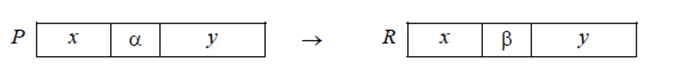

Теория нормальных алгоритмов была разработана советским математиком Андреем Андреевичем Марковым в конце 1940-х годов
При изучении разрешимости некоторых задач алгебры, он предложил новую модель вычислений, которую назвал нормальными алгорифмами
Нормальные алгорифмы Маркова (НАМ) — это строгая математическая форма записи алгоритмов обработки символьных строк, которую можно использовать для доказательства разрешимости или неразрешимости различных задач
Эти алгоритмы представляют собой некоторые правила по переработке слов в каком-либо алфавите
При этом исходные данные и результат работы алгоритма являются словами в этом алфавите
Марков предположил, что любой алгоритм можно записать как НАМ
В отличие от машин Тьюринга НАМ — это "чистый” алгоритм, который не связан ни с каким "аппаратным обеспечением” (лентой,кареткой, ..)
НАМ преобразует одно слово (цепочку символов некоторого алфавита) в другое и задается алфавитом и системой подстановок
Алфавитом будем называть любое непустое множество
Его элементы называются буквами, а любая последовательность букв – словами в данном алфавите
Для удобства рассуждений допускается пустое слово, которые обозначим $\Lambda$
Слова будем обозначать буквами $Р$, $Q$, $R$
Формулой подстановки называется запись вида $\alpha\to\beta$, где $\alpha$ и $\beta$ – любые слова (возможно, и пустые).
При этом $\alpha$ называется левой частью формулы, а $\beta$ – правой частью.
Сама подстановка (как действие) задается формулой подстановки и применяется к некоторому слову $Р$.
Суть операции сводится к тому, что в слове $Р$ отыскивается часть, совпадающая с левой частью этой формулы (т.е. с α), и она заменяется на правую часть формулы (т.е. на β). При этом остальные части слова Р (слева и справа от $\alpha$) не меняются. Получившееся слово $R$ называют результатом подстановки.
Условно это можно изобразить так:
Формулой подстановки может быть простой ($\to$) или заключительной($\to\cdot$)
Заключительные формулы завершают преобразование
$|*||$
$|b*|$
$ba|*|$
$a|*|$
$a|b*$
$aba|*$
$baa|*$
$aa|*$
$aa|c$
$aac$
$ac|$
$c||$
$||$
$101$
$0|01$
$0|00|$
$00||0|$
$00|0|||$
$000|||||$
$00|||||$
$0|||||$
$|||||$
Машина Поста — абстрактная вычислительная машина, созданная для уточнения понятия алгоритма
Более проста чем машина Тьюринга, но алгоритмически эквивалентна
Бесконечная лента из ячеек (каждая в одном из двух состояний) + каретка над этой лентой
Текущее состояние машины Поста описывается состоянием ленты и положением каретки. Состояние ленты – информация о том, какие секции пусты, а какие отмечены. Шаг – это движение каретки на одну ячейку влево или вправо. Кареткой управляет программа, состоящая из строк команд.
Каждая команда имеет следующий синтаксис:
i K j
где i — номер команды, K – действие каретки, j — номер
следующей команды (отсылка).
Типы команд
Варианты окончания выполнения программы:
Программой машины Поста будем называть конечный список команд машины Поста, обладающий следующими двумя свойствами:
Задача 1: увеличить число 3 на единицу.
Целое положительное число на ленте машины Поста представимо идущими подряд метками, которых на одну больше, чем кодируемое число. Это связано с тем, что одна метка обозначает ноль, а уже две – единицу, и т.д.
Задача 2: стереть метку в текущей клетке и присоединить ее слева к группе меток, расположенных справа от каретки
Cтрогое математическое построение, математический аппарат, созданный для решения определённых задач.
Абстрактный исполнитель, осуществляющий алгоритмический процесс, созданный для уточнения понятия алгоритма.
Лента (внешняя память)
В каждый момент времени на ленте записано конечное число непустых букв
Лента является конечной, но дополняется в любой момент ячейками слева и справа для записи новых непустых символов.
Автомат каждый раз “видит” только одну ячейку. В зависимости от того, какую букву он видит, а также в зависимости от своего состояния $q$ автомат может выполнять следующие действия:
Конкретная машина Тьюринга задаётся:
Для каждой возможной конфигурации $q_i,a_j$ имеется ровно одно правило
Еще надо указать начальное и конечное состояния, начальную конфигурацию на ленте и расположение каретки
Пример машин Тьюринга
| $Q$\$A$ | $\sqcup$ | 0 | 1 |
| b | c0R | ||
| c | d$\sqcup$R | ||
| d | e1R | ||
| e | b$\sqcup$R |
Начальное состояние b, лента бесконечная из пробелов, конечного состояния нет
Полнота по Тьюрингу — характеристика исполнителя в теории вычислимости, означающая возможность реализовать на нём любую вычислимую функцию.
Вычислимая функция — функция, вычислимая на машине Тьюринга.
Один из естественных способов доказательства того, что алгоритмы вычисления, которые можно реализовать на одной машине, можно реализовать и на другой, — это имитация первой машины на второй.
На машине Тьюринга можно имитировать все другие исполнители, каким-либо образом реализующие процесс пошагового вычисления, в котором каждый шаг вычисления достаточно элементарен.
В свою очередь, на различных абстрактных исполнителях можно имитировать машину Тьюринга. Исполнители, для которых это возможно, называются полными по Тьюрингу